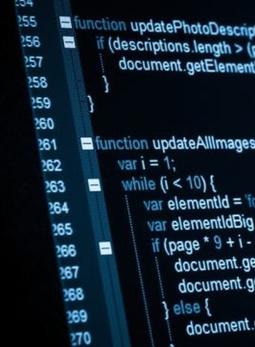

Iată explicația...
Un limbaj de programare este un set bine definit de expresii și reguli (sau tehnici) valide de formulare a instrucțiunilor pentru un computer. Un limbaj de programare are definite un set de reguli sintactice și semantice. El dă posibilitatea programatorului să specifice în mod exact și amănunțit acțiunile pe care trebuie să le execute calculatorul, în ce ordine și cu ce date. Specificarea constă practic în întocmirea/scrierea programelor necesare ("programare").
Pentru executarea unui program scris într-un limbaj oarecare, există, în principiu, două abordări: compilare sau interpretare. La compilare, compilatorul transformă programul-sursă în totalitatea sa într-un program echivalent scris în limbaj mașină, care apoi este executat. La interpretare, interpretorul ia prima instrucțiune din programul-sursă, o transformă în limbaj mașină și o execută; apoi trece la instrucțiunea doua și repetă aceleași acțiuni ș.a.m.d. Unele limbaje se pretează bine la compilare; de exemplu limbajele clasice: Pascal, Fortran, C. Altele sunt cu predilecție interpretate, de ex. BASIC, PHP, SQL. Multe limbaje moderne combină compilarea cu interpretarea: codul sursă este compilat într-un limbaj binar numit bytecode, care la rulare este interpretat de către o mașină virtuală. De remarcat faptul că unele interpretoare de limbaje pot folosi compilatoare așa-numite just-in-time, care transformă codul în limbaj mașină chiar înaintea executării.